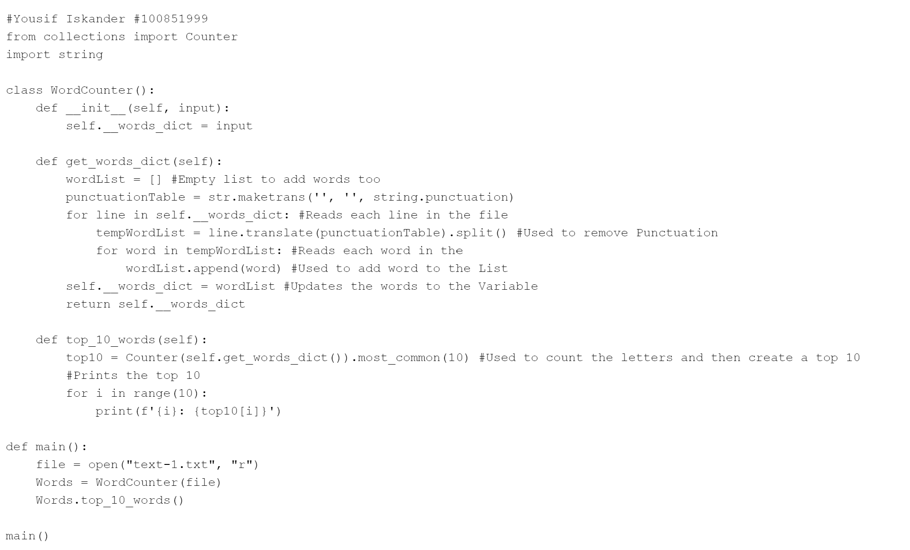

This First Project was one of the first that i have completed
while learning how to code Python for the first time.
I learned how to make a calculator using everything i had learned.

This Second Project was Learning Object-Oriented Programing for Python.
I learned how to make Program to Open a file and count the Words and then create a top 10